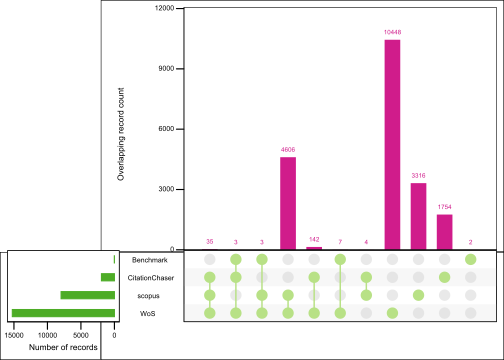
Effekter av arealbruk og arealbruksendringer på biodiversitet, økosystemtjenester og karbonlagring i Norge
Et systematisk kart og beslutningsstøtteverktøy
Erlend B. Nilsen , Trond Simensen , Frode Singsås , Lasse F. Eriksen , Håkon Stokland , Thomas E. Sutcliffe , Anders Kolstad , Francesca Pilotto , Matthew Grainger
Siteres som:
Nilsen, E.B., Grainger, M. 2024. Effekter av arealbruk og arealbruksendringer på biodiversitet, økosystemtjenester og karbonlagring i Norge:Et systematisk kart og beslutningsstøtteverktøy NINA Rapport 1234. Norsk institutt for naturforskning.
Kvalitetsgranskere: xx
Ansvarlig signatur: Forskningssjef [fylles ut av forskningssjefen] (sign.)
Sammendrag
Tekst inn her, et kort resymé av innholdet. Teksten i sammendraget er søkbar i databaser og på nett, og er viktig for at rapporten skal fanges opp ved søk.
Seksjoner og tomme rader mellom dem er litt tricky å få til i YAML-avsnittet, men det kan gjøres slik. Tomme rader i forordet kan også lages på samme måte.
Abstract
Tekst inn her, et kort resymé av innholdet. Teksten i sammendraget er søkbar i databaser og på nett, og er viktig for at rapporten skal fanges opp ved søk.
1 Innledning
Endring i arealbruk og landdekke (Land Use and land cover change; LULCC) anses å være den dominerende driveren av nylig tap av biodiversitet både globalt og i Norge, og påvirker direkte naturens evne til å tilby naturgoder og -tjenester (Díaz et al., 2019; Malhi et al., 2020). LULCC påvirker også et økosystems evne til å lagre og binde karbon i jord og biologisk materiale, og påvirker dermed direkte et økosystemeness evne til å bidra til å motvirke og tilpasse seg klimaendringer direkte. Å kvantifisere, forstå og formidle dynamikken i arealendringer og deres effektener på biodiversitet, økosystemtjenester og karbonlagring er derfor en forutsetning for kunnskapsevidensbaserte arealbruksstrategier. Imidlertid mangler det for øyeblikket systematisk evidens om dette temaet fra norske økosystemer. Dette inkluderer både grunnleggende usikkerhet rundt årsak-virkningsmekanismer når det gjelder effekter av arealutnyttelse på naturmangfold og med tanke på det empirisk datagrunnlag. Mye av den offentlige diskursen på nasjonalt nivå domineres av internasjonale globale kunnskapssyntesersammendrag, til tross for betydelig usikkerhet rundt nedskalering og overføring av kunnskap fra globale og regionale synteser til nasjonalt eller lokalt/nasjonalt nivå, på tvers av økosystemer og taksonomiske grupper. Tidligere kunnskapssammenstillingerammendrag basert på data fra norske økosystemer har enten fulgt spesifikke tilnærminger med data for utvalgte indikatorer (f.eks. Vurdering av økologisk tilstand Økosystemvurdering; (Nybø et al., 2017)), i stor grad basert på ekspertvurderinger (Artsdatabanken, 2018, 2021), eller vært begrenset i omfang. Mangelen på en samlet og omfattende oversikt over forskningsbasert kunnskap fra norske økosystemer fører også til at ulike interessegrupper og sektorer stoler på ulike “fakta,” noe som ofte fører til eskalerende konflikter og dårlige beslutninger. Det er derfor et presserende behov både for en oppsummering av kunnskap og identifisering av reelle kunnskapshull. Politikk og beslutningstaking knyttet til arealbruk og dens effekter av arealbruk på biodiversitet og klima er for øyeblikket blant de mest konfliktfylte og heftig debatterte politiske spørsmålene i Norge. Konfliktene involverer typisk dilemmaer mellom ulike samfunnsmessige bekymringer og interesser støttet av ulike sektorer og aktørgrupper (Guldbrandsen & Handberg, 2022; Skogen et al., 2021). KunnskapskKontrovers om kunnskapsgrunnlaget er også ofte etn sentralt egenskapaspekt ved konfliktene, kjennetegnet vedog innebærer uenighet om kunnskapens status og motstridende tolkning av kunnskapenkunnskapskrav om de miljømessige effektene av ulike alternativer for arealbruk (Aspøy & Stokland, 2022; Rusch et al., 2022). IPBES (2019, 2022a, 2022b) og IPCC (2018) har foreslått styringsmetoder og tiltak, slik som de knyttet til transformasjonsendringer og transformasjonsstyring, for å muliggjøre oppnåelsen av FNs bærekraftsmål (Sustainable development goals (SDG) SDG-ene, klimaavtalens mål om å begrense global oppvarming til grensen på 1,5°C og den globale naturavtalens 2050-visjonen om å stanse og reversere fortap av biodiversitet . Slike tilnærminger involverer forbedret integrasjon og samhandling mellom samfunnsmessige mål, styringssektorer og flere kunnskapskilder, og er dermed svært relevante for norsk politikk og beslutningstaking knyttet til arealbruk. Imidlertid hindres implementeringutnyttelsen og tilpasningen av internasjonalt anbefalte tilnærminger og verktøy til en norsk kontekst for øyeblikket av mangelen på en omfattende forståelse av nasjonale og lokale dilemmaer og konflikter knyttet til arealbruk, samt de for tiden anvendte verktøyene og tilnærmingene. Det er derfor et presserende behov for en kunnskapssyntese som ogsåog identifiseringer av kunnskapshull knyttet til angående disse aspektene ved arealbruk og dens effekter på biodiversitet og klima. Systematiske kart (også kjent som Evidenshullkart eller Evidenshullkart) ble utvikletdesignet for å gi en oversikt over tilgjengelig evidens om et bredt tema (Saran et al., 2020). Mens systematiske kunnskapsoversikter (systematic reviews)De søker ikke å svare på smale, veldefinerte spørsmål (slik systematiske oversikter gjør), er systematiske kart først og fremst egnet men heller å gi et middel til å identifisere og katalogisere tilgjengelig evidens om politisk relevante spørsmål (James et al., 2016). Systematiske kart har blitt realisert på en rekke ulike måter, men gir generelt resultatene på en brukervennlig måte, for eksempel ved hjelp av grafer, kart eller søkbare databaser (Miake-Lye et al., 2016). Interaktive figurer og applikasjonerplott og som visualiserer kartleggingen blir i økende grad brukt for å gi en dynamisk sammenstilling og presentasjon forutgang til brukerne (slik som EviAtlas; Haddaway et al., 2019). Det er viktig at systematiske kart over kunnskap ikke fremstilles som et mål i seg selv. Systematiske kart forteller først og fremst hva vi har kunnskap om, mens systematiske oversikter indikerer hva vekten av evidens sier om utvalgte forskningsspørsmål. Uten ytterligere evidenssyntese må beslutningstakere være forsiktige med å treffe beslutninger basert kun på evidensens vekt alene (dvs. stemmeoptelling, jf. (Hedges & Olkin, 1980)). Systematiske kart kan ikke erstatte rigoriteten til systematiske oversikter, men kan gi beslutningstakere forståelse av evidensgrunnlaget ved å belyse hull eller klynger av evidens. De kan vise hvor evidenssyntese kan eller bør finne sted (dvs. For hvilke forskningsspørsmål det er tilstrekkelig med tilgjengelig evidens for en systematisk oversikt) eller hvor primærforskning er nødvendig (dvs. det er mangel på evidens). Beslutningsmodeller kan supplere resultatene av en systematisk evidenssyntese for å plassere den tilgjengelige evidensen i beslutningskonteksten (Carrick et al., 2019).
1.1 Arealbruk og arealbruksendringer i Norge
Pågående areal- og landskapsendringer i Norge er til dels et resultat av globale trender og til dels et resultat av regionale endringer, lokal politikk og lokal arealbruk. Sentrale endringsprosesser er blant annet knyttet til arealendringer som følge av byggeaktivitet (bebyggelse, næringsområder, samferdsel og infrastruktur), og endret menneskelig bruk av, og påvirkning på, natur og utmark.
Litt i underkant av 2% av Norges areal er i 2024 utbygd med veier, infrastruktur, bebyggelse og annet sterkt endret areal. Andelen er høyere enn verden (1%) men lavere enn gjennomsnittet i EU (4%). Det som skiller Norge fra mange andre europeiske land er at vi har lite jordbruksareal: bare 3% dyrka mark og innmarksbeite. Bebygd areal er jevnt økende; i perioden 1990-2019 ble det totalt bygget ned 1 500 km2. Det tilsvarer om lag 50 km2 årlig. Det aller meste av arealet som ble bygget ned var skog (75 pro-sent), etterfulgt av dyrket mark (14 prosent) og innmarksbeite (7 prosent). Resten (3 prosent) av arealet som er bygd ned utgjøres av kategoriene åpen og tresatt utmark, og vann og myr. Brorparten av nedbyggingen skyldtes bebyggelse (43 prosent) og veier (26 prosent). I kate-gorien bebyggelse utgjorde bygging av boliger og hytter de største andelene. I tillegg kommer kraftlinjer (10 prosent), grustak, steinbrudd o.l. (9 prosent), idrettsarenaer (6 prosent) og an-net (5 prosent; SSB tabell 09594).
Selv om andelen av landarealet i Norge som er direkte utbygd eller dyrket er lav, er store deler av landet klart påvirket av menneskelig arealbruk. Siden siste istid har så å si alt areal er eller har vært i bruk av mennesker – til jakt, fiske beite, skogbruk, utvinning av naturressurser, friluftsliv, og senere også til naturvern, som også er en form for arealbruk. Omfang og intensitet i den menneskelige arealbruken har endret seg mye gjennom århundrene. På terskelen til den moderne tid, omkring 1850, var naturressursene utnyttet helt til grensa for hva landområdene kunne tåle, og produksjonen var maksimert med datidens teknologi.
1.1.1 Endringer 1850-1950
Det som aller tydeligst kjennetegner nåtidsperiodens arealbruk er ifølge Edvardsen (2024) en polarisering av arealbruken, med mer intensiv bruk av de best egnede arealene til jord- og skogbruk, mens andre arealer i utmarka enten tas ut av bruk eller tas i bruk til nye formål. Vi høster mer fra landet enn før, takket være avl, teknologi, og vitenskap og innovasjon, men det foregår på en mindre del av landarealet. Opphør av ekstensiv hevd fører til endringer i tradisjonelle kulturlandskap.
Det skyldes både redusert bruk av utmarka og varmere klima. Vi har både avskoging og «påskoging». Skoggrensa kryper sakte men sikkert oppover i fjellet. Samlet biomasse har fram til helt nylig økt, men de virkelig gamle naturskogene har vi stadig færre igjen av. Fjellheier, kystheier, beite- og slåtteenger, ofte artsrike kulturlandskap, gror igjen.
Hele Norge er «i bruk» Norge gror igjen Naturen er under press Klima, natur og arealbruk henger sammen Vi eksporterer og importerer arealbruk Arealbruksdilemmaene vil øke de nærmeste tiårene
Arealbruk i landet og i verden er tett sammenvevet. Norske eksportprodukter er basert på arealinngrep fra energiproduksjon, utvinning og høsting av naturressurser. Samtidig importerer vi produkter og tjenester som ofte gir arealendringer og naturtap andre steder i verden, et fenomen som kalles telekobling av arealbruk (#ref). Mye tyder på at arealbruksdilemmaene kommer til å øke i omfang i årene framover. Viktige kilder til kunnskap om endringer i arealbruk over tid er statistikk og overvåkingsprogram som gjennomføres i regi av blant andre Statistisk sentralbyrå (SSB) og Norsk institutt for bioøkonomi (NIBIO). SSBs arealbrukskart som har blitt produsert årlig siden 2013 (Rørholt et al. 2024), mens systematisk kartlegging og overvåkning av arealbruk gjennom landsskogtakseringen har pågått siden 1980-tallet (Breidenbach et al. 2020). Vi har i dag flere overvåkingssystem for kartlegging av areal- og vegetasjonstyper i et utvalg prøveflater (AR 18x18; Bryn et al. 2018), skogressurser (Breidenbach et al. 2020) og kartlegging av naturtyper basert på utvalgskartleggingstikk (Tingstad et al. nnnn). Disse programmene vil gi verdifull innsikt i endringer i arealbruk over tid, men i 2024 er det få av programmene som har pågått lenge nok til å gi persise estimat over arealendringer i alle naturtyper.
1.2 Involvering av brukere og samfunnsaktører
Utkastet til vurderingen ble presentert på en konferanse holdt av Miljødirektoratet og Norges forskningsråd 23. oktober 2022. Et generelt interessentmøte ble arrangert av NINA 25. april 2023. Fokus og omfang av vurderingen ble innsnevret og bedre definert under et spesifikt interessentarrangement den #date. Detaljer om dette møtet og endringene i omfang er tilgjengelige på forespørsel. Interessenter som deltok på dette arrangementet ble invitert til å kommentere utkastet til protokollen før innsending til publisering. Interessenter var ikke involvert under gjennomføringen av vurderingen.
1.3 Formålet med kunnskapssammenstillingen
Hovedmålet med dette prosjektet er å gi en helhetlig oversikt over tilgjengelig kunnskap knyttet til effekter av arealbruk og arealbruksendringer på norsk natur, med fokus på biologisk mangfold, økosystemtjenester, klimatilpasning, karbonbinding og lagring. Kartet er begrenset i geografisk omfang til Norge, Sverige og Finland (se inklusjonskriterier nedenfor). Rapporten er dessuten ledsaget av et beslutningsstøtteverktøy som en utvidelse av det systematiske kartet for å kontekstualisere tilgjengelig kunnskap. Verktøyet er utformet som en konseptuell modell av kunnskapsfeltet og synliggjøre betydningen av kunnskapshull på ulike områder.
1.3.1 Hovedproblemstilling
Hovedspørsmålet i vårt systematiske kart er «Hvilke forskningsbasert kunnskap finnes knyttet til virkningene av arealbruk og endringer i arealbruk på biologisk mangfold, økosystemtjenester og karbonbinding i Norge, hvilken type konflikter er identifisert mellom ulike former for arealbruk, og hvilke verktøy foreslås for å forbedre styringen”.
1.3.2 Underproblemstillinger
Vi vil karakterisere den eksisterende litteraturen langs følgende akser:
Hvor stor andel av forskningen er basert på empiriske data?
Hvor stor andel av forskningen er basert på eksperimenter vs observasjonelle studier?
Hvor stor andel av forskningen er basert på kvalitative metoder vs kvantitative/blandete metoder?
Hvordan er forskningen fordelt over ulike økosystemer?
Hvordan er forskningen fordelt over ulike disipliner?
Hvordan er forskningen fordelt over ulike nivå av biologisk organisering?
Hva er de mest studerte formene for arealbruk og arealbruksendringer?
Hvilke regioner/fylker er mest representert i datamaterialet?
Hvor stor andel av forskningen fokuserer på governance, konfliker og verktøy?
What are the dominant types of land use that are investigated?
Hva er de dominante analytiske tilnærmingene for samfunnsvitenskapelige studier?
Hvilke aktører er hyppigst representert i forskningen?
Hvilke sektorer og samfunnsmessige områder er hyppigst studert?
Which level of societal scale do the studies represent?
Which land use conflicts are most researched?
Which tools are proposed and investigated?
2 Metoder
Før prosjektet ble gjennomført ble det uviklet en detaljert protokoll som beskriver gjennomføringen. Denne protokollen inkluderte en detlajert beskrivelse av:
Søkestrenger, søkeord og språk
Eventuelle supplerende søk som f.eks. «citation chasing»
Hvilke databaser vi vil søke i, og eventuelle nettsteder for søk etter grå litteratur som ikke er tilgjengelig i databasene
Sentrale artikler (benchmark-artikler) som søket forventes å plukke opp
Kriterier for screening av artikler (inkludering/ekskluderings-kriterier)
Prosedyrer for sjekk av konsistens mellom review-personellet
Regler for datakoding
Versjon 1.0 av protokollen ble uviklet på et tidlig prosjektstadie, og sirkulert til en utvidet prosjektgruppe og til utvalgte samfunnsaktører. Basert på tilbakemeldinger på denne versjonen ble en ny versjon av protokollen utarbeidet og publisert. Videre justeringer av protokollen har blitt gjennomført på screening- og koding-stadiet av prosjektet. Alle versjoner er publisert åpent på Open Science Framework, og alle versjoner er versjonert og datert. En oversikt over protokollene kan finnes her https://osf.io/mwapc/. Den enelige versjonen av protokollen kan leses her (ref).
2.1 Avvik fra protokollen
Erlend skriver her…
2.2 Søk etter litteratur
2.2.1 Søk i online databaser
Systematiske litteratursøk for akademisk (forskningsbasert) litteratur ble gjennomført i Scopus og i følgende Web of Science Core Collection databaser:
Science Citation Index Expanded (SCI-EXPANDED): 1987–dd.
Social Sciences Citation Index (SSCI): 1987–dd.
Arts and Humanities Citation Index (AHCI): 1987–dd.
Emerging Sources Citation Index (ESCI): 2015–dd.
Det ble gjennomført en rekke preliminære søk i Web of Science, og disse ble benyttet til å fintune søkestrengen (ref protokollen).
2.2.2 Søketermer og søkestreng
I vår søkestrategi benyttet vi oss av PICO-rammeverket (James et al., 2016) for å strukturere søket, og sørge for at det var dekkende for vårt primære forskningsspørsmål.
Følgende søkestreng ble benyttet i WoS (tilsvarende streng ble benyttet i Scopus, men her ble søket justert for å passe systemets interface):
TS=(“land use” OR “land cover” OR “space use” OR LULCC OR (planning AND (spati* OR region* OR area* OR conservation OR land* OR urban)) OR (conversion AND (land* OR habitat* OR area* OR ecosystem* OR natur)) OR (change NEAR/3 (land* OR area)) OR “national park” OR landscape* OR habitat* OR Husbandry OR “land shar” OR “land spar” OR (Outdoor NEAR/3 (life OR livin* OR recreat)) OR (restoration AND (nature OR ecosystem)) OR forestry OR (reindeer NEAR/3 (herd* OR husbandr)) OR (livestock NEAR/3 graz) OR “holiday home” OR “secondary home”OR (recreation* NEAR/3 (home* OR cottage* OR cabin* OR propert)) OR tourism OR “wind power” OR “Land manag” OR “Nature conservation” OR ((governance OR management) AND (spati* OR region* OR area* OR conservation OR land* OR urban)) OR aquaculture OR “fish farm” OR hydropower OR “green energy” OR “energy development” OR herding OR agriculture OR transportation OR road OR “oil and gas” OR petroleum OR mining OR windpower OR traffic OR road* OR railway* OR “hydroelectric power” OR “solar power” OR “solar electricity” OR “power plant” OR LULC OR LULUCF OR AFOLU OR FOLU)
AND
TS=(sustainab* OR biodiversity OR “Ecosystem service” OR (carbon NEAR/3 (stor OR sequest)) OR (ecosystem NEAR/3 (impact* OR effect* OR provision* OR regulat* OR support* OR cultur)) OR ((loss OR shrink OR bisection* OR perforation OR fragmentation) AND (habitat OR land)) OR (climate NEAR/3 adapt) OR ecodiversity OR “ecosystem type” OR “ecological process” OR anthropogenic OR conflict OR (diversity NEAR/3 (ecological OR speci* OR population*)) OR red-list OR “water purification” OR “soil retention” OR spiritual OR cultural OR aesthetics OR “climate mitigation”)
We screened all systematic reviews and systematic maps from the international literature, the two categories were combined with TS=(“Systematic review” OR ”systematic map” OR “rapid review*”). For the primary literature, the two categories were combined with TS=(Norway OR Norwegian OR Sweden OR Swedish OR Finland OR Finnish), and all results screened.
2.2.3 Test av søkets omfang og dekning
For å sørge for at søket ga en god dekning av den aktuelle litteraturen valgte vi ut 15 benchmark-artikler, og undersøkte hvor godt disse ble fanget opp av søket. Artiklene ble valgt ut gjennom en diskusjon i prosjektgruppa, med det formål å dekke både bredde og dybde i søket. I det enedelig søket ble totalt 13 av de 15 artiklene fanget opp.
Matt: add colour to this figure
De 15 benchmark-artiklene var som følger:
Aune, S., Bryn, A. & Hovstad, K.A. 2018. Loss of semi-natural grassland in a boreal landscape: impacts of agricultural intensification and abandonment. Journal of Land Use Science 13(4): 375-390. https://doi.org/10.1080/1747423x.2018.1539779
Bouyer, Y., Martin, G.S., Poncin, P., Beudels-Jamar, R.C., Odden, J. & Linnell, J.D.C. 2015. Eurasian lynx habitat selection in human-modified landscape in Norway: Effects of different human habitat modifications and behavioral states. Biological Conservation 191: 291-299. https://doi.org/10.1016/j.biocon.2015.07.007
Dorber, M., May, R. & Verones, F. 2018. Modeling Net Land Occupation of Hydropower Reservoirs in Norway for Use in Life Cycle Assessment. Environmental Science & Technology 52(4): 2375-2384. https://doi.org/10.1021/acs.est.7b05125
Foldvik, A., Einum, S., Finstad, A.G. & Ugedal, O. 2017. Linking watershed and microhabitat characteristics: effects on production of Atlantic salmonids (Salmo salar and Salmo trutta). Ecology of Freshwater Fish 26(2): 260-270. https://doi.org/10.1111/eff.12272
Gundersen, V., Vistad, O.I., Panzacchi, M., Strand, O. & van Moorter, B. 2019. Large-scale segregation of tourists and wild reindeer in three Norwegian national parks: Management implications. Tourism Management 75: 22-33. https://doi.org/10.1016/j.tourman.2019.04.017
Hamre, L.N., Domaas, S.T., Austad, I. & Rydgren, K. 2007. Land-cover and structural changes in a western Norwegian cultural landscape since 1865, based on an old cadastral map and a field survey. Landscape Ecology 22(10): 1563-1574. https://doi.org/10.1007/s10980-007-9154-y
Hamre, L.N., Rydgren, K., Incerti, C., Hjorth-Johansen, I. & Simonsen, K.S. 2021. Paradise lost - transformation of the gully landscape in South-East Norway. Landscape Research 46(3): 377-389. https://doi.org/10.1080/01426397.2020.1847263
Jarnemo, A., Minderman, J., Bunnefeld, N., Zidar, J. & Månsson, J. 2014. Managing landscapes for multiple objectives: alternative forage can reduce the conflict between deer and forestry. Ecosphere 5(8): 14. https://doi.org/10.1890/es14-00106.1
Karlsson, J., Byström, P., Ask, J., Ask, P., Persson, L. & Jansson, M. 2009. Light limitation of nutrient-poor lake ecosystems. Nature 460(7254): 506-U80. https://doi.org/10.1038/nature08179
Korsnes, M., Loewen, B., Dale, R.F., Steen, M. & Skjolsvold, T.M. 2023. Paradoxes of Norway’s energy transition: controversies and justice. Climate Policy: 23(9): 1132-1150. https://doi.org/10.1080/14693062.2023.2169238
Pedersen, C. & Krogli, S.O. 2017. The effect of land type diversity and spatial heterogeneity on farmland birds in Norway. Ecological Indicators 75: 155-163. https://doi.org/10.1016/j.ecolind.2016.12.030
Rolstad, J., Blanck, Y.L. & Storaunet, K.O. 2017. Fire history in a western Fennoscandian boreal forest as influenced by human land use and climate. Ecological Monographs 87(2): 219-245. https://doi.org/10.1002/ecm.1244
Rusch, G.M., Bartlett, J., Kyrkjeeide, M.O., Lein, U., Norden, J., Sandvik, H. & Stokland, H. 2022. A joint climate and nature cure: A transformative change perspective. Ambio 51(6): 1459-1473. https://doi.org/10.1007/s13280-021-01679-8
Skogen, K., Mauz, I. & Krange, O. 2008. Cry wolf! Narratives of wolf recovery in France and Norway. Rural Sociology 73(1): 105-133. https://doi.org/10.1526/003601108783575916
Tombre, I.M., Eythórsson, E. & Madsen, J. 2013. Towards a Solution to the Goose-Agriculture Conflict in North Norway, 1988-2012: The Interplay between Policy, Stakeholder Influence and Goose Population Dynamics. Plos One 8(8): e71912. https://doi.org/10.1371/journal.pone.0071912
2.2.4 Ytterligere søk etter litteratur
Artikler som er sitert av eller siterer (engelsk: forward and backward citation chasing) de 15 benchmark-artiklene ble søkt ved hjelp av verktøyet citationchaser i R (Haddaway et al. 2022).
2.2.5 Sammenstilling og håndtering av søkeresultater
Søkeresultater, inkludert listen over benchmarks og “citation chasing” resultater, ble lastet ned som .RIS-filer. Studier ble de-duplisert basert på DOI og tittelmatcher ved å bruke R-pakken ‘ASySD’ (Hair et al. 2021). Vi beholdt den nyeste versjonen av alle versjonskontrollerte artikler (for eksempel ble publiserte versjoner av forhåndstrykk beholdt). De-dupliserte artikler ble deretter lastet opp til RayyanAI for å lette screening. Artikler som besto sammendragsscreeningsstadiet ble deretter eksportert til en delt Zotero-database, og pdf-versjoner ble søkt etter ved hjelp av Zoteros pdf-søkeverktøy. Eventuelle artikler uten pdf-er ble søkt manuelt på ResearchGate eller på tidsskriftsnettsteder. Der hvor pdf-er ikke var tilgjengelige, ble de bedt om fra forfatterne. Beslutninger om eksklusjonsårsaker på fulltekststadiet ble registrert i Notes-verktøyet i Zotero. Koding fant sted ved bruk av et “google-form” som automatisk fylte ut et “googlesheet” som dannet databasen over inkluderte studier.
2.2.6 Screening av artikler
Vi brukte forhåndsdefinerte inklusjons-/eksklusjonskriterier for å screene kvalifiserte studier. Inkluderte studier ble de-duplisert basert på DOI og tittelmatcher ved å bruke R-pakken ‘ASySD’ (Hair et al. 2021). Vi beholdt den nyeste versjonen av alle versjonskontrollerte artikler (for eksempel ble publiserte versjoner av forhåndstrykk beholdt).
Etter de-duplisering ble tittel og abstrakt screening utført ved å bruke kvalifikasjonskriteriene, og alle studier klassifisert som usikre ble vurdert på fulltekststadiet. Screeningen ble gjort ved hjelp av Rayyan, med dobbel screening av en primær og flere sekundære anmeldere. Etter 50 inkluderings-/ekskluderingsbeslutninger brukte vi Rayyan-AI 5-stjerners rangering for å rangere sammendragene for vurdering. Denne algoritmen vurderer sammendrag og titler ved hjelp av naturlig språkbehandling for å identifisere poster som har et høyt potensial for inkludering (5 stjerner) eller de med et lavere potensial (1 stjerne).
Ukentlig overvåking ble utført for gruppeuenighetsrater, og kvalifikasjonskriteriene ble revurdert og justert når frekvensen oversteg 15 %. Motstridende beslutninger ble avstemt gjennom diskusjoner med hele gjennomgangsgruppen. Studier merket som usikre på hvert trinn ble vurdert på neste nivå, med de som var merket som usikre gjennomgått av hele teamet.
2.3 Inkluderings- og ekskluderingskriterier
Vi gikk gjennom alle studiene som ble funnet via ved, og inkluderte / ekskluderte artikler basert på kriteriene angitt nedenfor. Kun studier utført i Norge, Sverige og Finland eller systematiske oversikter (også referert til som metaanalyser) med global, europeisk eller fennoskandisk dekning ble inkludert i oversikten. Bare artikler der fullteksten er skrevet på engelsk, norsk, svensk eller dansk ble inkludert.
Studier ble inkludert dersom de vurderte effekter av arealbruk eller arealbruksendringseffekter på biologisk mangfold, økosystemtjenester/funksjoner eller karbonbinding og lagring i Feno-Skandinavia. Bare studier som fokuserer på terrestriske, akvatiske eller kystnære områder ble inkludert (dvs. studier som fokuserer på marine systemer ble ekskludert).
Studier ble også inkludert dersom de vurderer konflikter, verktøy eller styring knyttet til arealbruk og dekker endringer i dets effekter på biologisk mangfold, økosystemtjenester og/eller karbonbinding og lagring av økosystemer i Fenno-Skandinavia. Forholdet måtte være eksplisitt beskrevet i studien for at posten ble inkludert.
Studier av alle skalaer (nasjonale, regionale og lokale) ble vurdert som relevante for inkludering.
2.3.1 Kvalifiserte intervensjoner
Arealbruk og/eller arealdekning endres gjennom en eller flere drivere (se vedlegg) som er av menneskeskapt opprinnelse og resulterer i en eller flere av kjernemekanismene (endring i habitat – mengde; habitatsammensetning; habitatstruktur; habitat – funksjon; indirekte , for eksempel endret menneskelig bruk i rekreasjon osv.).
2.3.2 Kvalifiserte responsvariabler (utfall)
Kvalifiserte utfall inkluderte funksjon, struktur, mangfold, overflod, atferd, sammensetning eller rikdom på et hvilket som helst nivå av biologisk organisasjon (genetisk, art, samfunn, økosystem, landskap – flere økosystemer), samt studier som fokuserer på mengden av mangfold eller kategori av økosystemtjenester (tilveiebringelse, regulering, støtte eller kulturell tjeneste og karbonlagring og -sekvestrering).
I tillegg ble studier innen samfunnsvitenskap inkludert dersom de eksplisitt tar for seg konflikter, verktøy og styring knyttet til effekter arealbruk og endring av arealdekke på biologisk mangfold, økosystemtjenester og/eller karbonbinding og lagring.
2.3.3 Kvalifiserte studiedesign
Alle studiedesign ble vurdert som kvalifiserende, inkludert både kvantitative og kvalitative studier.
2.4 Vurdering av studienes validitet
Matt write here
2.5 Datakodestrategier
For alle artikler som oppfylte inkluderingskriteriene og som derfor ble inkludert i gjennomgangen hentet vi ut en del nøkkelegenskaper og informasjon for senere dataanalyse. Et utvalg på 15 artikler ble kodet av alle i reviewgruppa for å skape enighet omkring koding. Kriterier for koding er gitt i vedlegg 3. ‘Metadata’ inkluderte grunnleggende egenskaper for hver studie, som forfatternavn, navn på tidsskrift, serie, studielengde og år. De resterende kategoriene inkluderte informasjon om åpen vitenskap, geografisk, miljømessig og romlig kontekst, forskningstype og kontekst, taksonomisk kontekst, type arealbruk og arealbruksendring, utfall og påvirkede tiltak, styringseffekter og verktøy.
2.6 Data mapping method
Matt write here
3 Resultater
3.1 Resultat av litteratursøket
Matt - How many papers and things like that
3.1.1 Kilder og dokumenttyper for inkluderte artikler
3.1.2 Deskriptiv statistikk
…….
4 Litteratur fra Norge
Matt Add EBV figure
Totalt ble 244 artikler fra Norge inkludert etter at screeingen var gjennomført.

4.1 Kronologisk fordeling og innhold i inkluderte artikler fra Norge
Matt - add second axis with the actual numbers

4.2 Hvor stor andel av forskningen er basert på eksperimentelle vs observasjonelle studier?
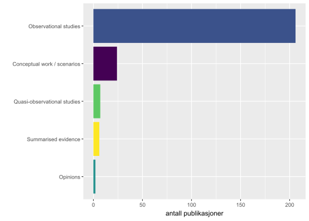
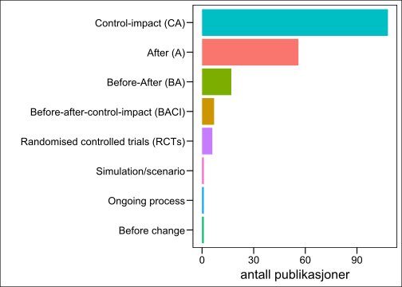
4.3 Hvor stor andel av forskningen er gjennomført i ulike økosystemer?
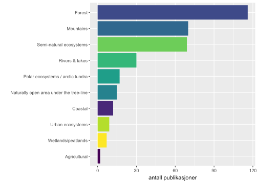
4.3.1 Hvordan er forskningen fordelt på ulike disipliner?
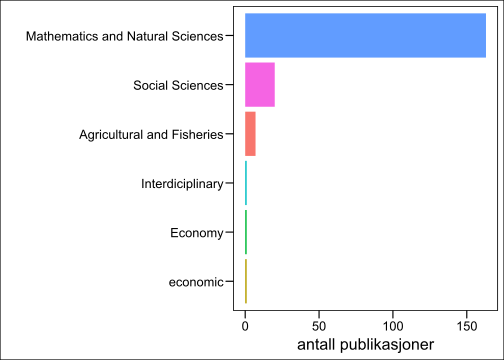
4.3.2 Hvordan er forskningen fordelt på ulike nivåer av biologisk organisering (arter, taksonomiske nivå, økosystemtjenester osv)?
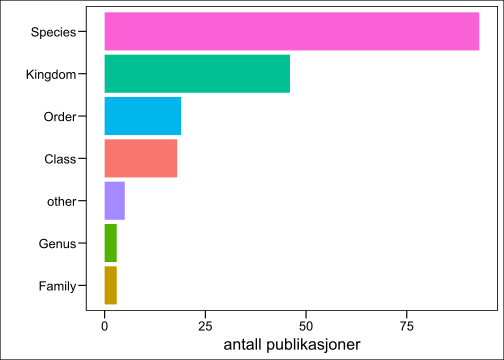
4.3.3 Hva er de mest studerte typene av arealbruk og arealbruksendringer?
Matt: two figures -1) pooled classes 2) Top ten
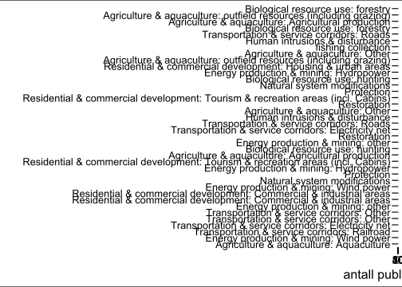
4.3.4 Hvilke regioner i Norge er det gjennomført mest forskning på de aktuelle tema?

4.3.5 Hvor vanlig er det at studiene er basert på åpne data, åpen kildekode og preregistrering av hypoteser?


fit models... done.
calculate metrics:
Griffiths2004... done.
CaoJuan2009... done.
Arun2010... done.
Deveaud2014... done.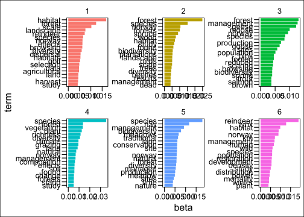
4.4 Mapping the effects of land use and land cover change on biodiversity, carbon and conflicts

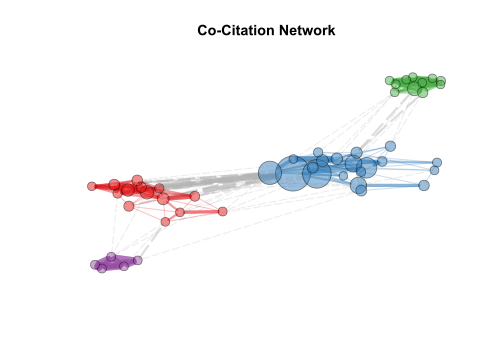
Matt Add text around figures and add ecosystem services plots
Matt Add social science figures
4.5 Systematiske litteratursammenstillinger
5 Sammenstilning av data fra alle inkluderte artikler fra Norge, Sverige og Finland
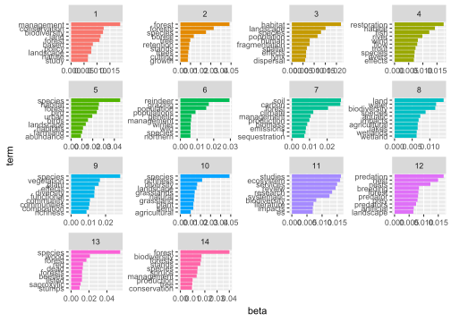
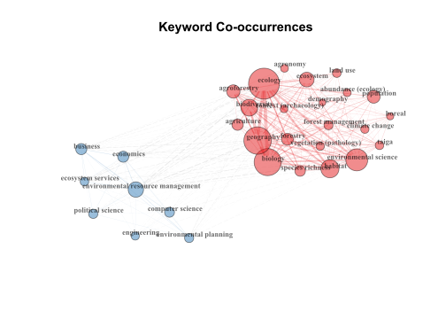
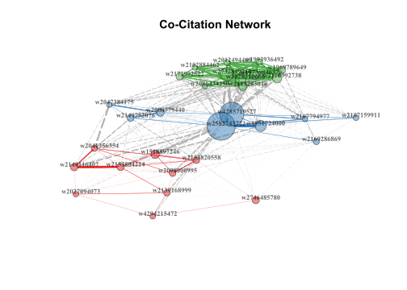


5.1 Open Access status

6 Begrensninger i litteraturstudien
Vi har ikke funnet alle artikler (søkestreng)
Tidsrammer og økonomiske rammer
7 Datamangler og kunnskapshull
Savner godt designede eksperimenter, eller i det minste kvasi-eksperimenter (er nesten helt fraværende).
Biodiversitet-effekter av arealbruk i strandsonen var lite dekket.
Det var relativt få studier fra våtmark, i forhold til hvor stor utbredelse dette økosystemet har i Norge og Fennoscandia.
Biodiversitet-effekter av de ulike typer installasjoner for kraftproduksjon var mindre dekket enn antatt på forhånd (spesielt vindkraft virket lite dekket sett i forhold til samfunnsfokuset og omfanget av vindkraft i naturen).
Det var relativt få studier med bredt fokus på økosystemeffekter (og i stedet mange studier på enkeltarter).
8 Konklusjoner
8.1 Implikasjoner for forskning og forskningsfinansiering
…..
8.2 Implikasjoner for forvaltning og politikk
…..

Hvis man trenger flere muligheter for definisjon av størrelse og plassering på en ferdig bilde, kan man også inkludere den med “include_graphics”.
Vi kan også referere til bilder, for eksempel til Figur 1, som er inkludert i mallen. Man kan referere til seksjoner ved å angi en referanse i headingen {#seksjon}. For eksempel refererer jeg nå til innledningen i Kapittel 1.